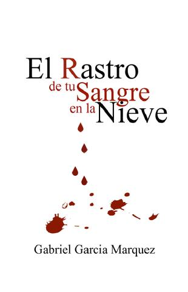

El rastro de tu sangre en la nieve
Incluido en la colección Doce cuentos peregrinos 1992, El rastro de tu sangre en la nieve presenta a dos recién casados que inician su luna de miel desde España hasta París. Sin embargo, el placer sexual que experimenta Nena Daconte, la protagonista, va ligado a una sangre cuyo rastro va quedando a través del invierno europeo. Marcado por un giro final que define el potencial de la obra, el mejor relato de Gabo confirma el buenhacer del escritor colombiano para una literatura breve de la que derivarían algunas de sus grandes novelas.

Al anochecer, cuando llegaron a la frontera, Nena Daconte se dio cuenta de que el dedo con el anillo de bodas le seguía sangrando. El guardia civil con una manta de lana cruda sobre el tricornio de charol examinó los pasaportes a la luz de una linterna de carburo, haciendo un grande esfuerzo para que no lo derribara la presión del viento que soplaba de los Pirineos. Aunque eran dos pasaportes diplomáticos en regla, el guardia levantó la linterna para comprobar que los retratos se parecían a las caras.Nena Daconte era casi una niña, con unos ojos de pájaro feliz y una piel de melaza que todavía irradiaba la resolana del Caribe en el lúgubre anochecer de enero, y estaba arropada hasta el cuello con un abrigo de nucas de visón que no podía comprarse con el sueldo de un año de toda la guarnición fronteriza. Billy Sánchez de Ávila, su marido, que conducía el coche, era un año menor que ella, y casi tan bello, y llevaba una chaqueta de cuadros escoceses y una gorra de pelotero. Al contrario de su esposa, era alto y atlético y tenía las mandíbulas de hierro de los matones tímidos. Pero lo que revelaba mejor la condición de ambos era el automóvil platinado, cuyo interior exhalaba un aliento de bestia viva, como no se había visto otro por aquella frontera de pobres. Los asientos posteriores iban atiborrados de maletas demasiado nuevas y muchas cajas de regalos todavía sin abrir. Ahí estaba, además, el saxofón tenor que había sido la pasión dominante en la vida de Nena Daconte antes de que sucumbiera al amor contrariado de su tierno pandillero de balneario